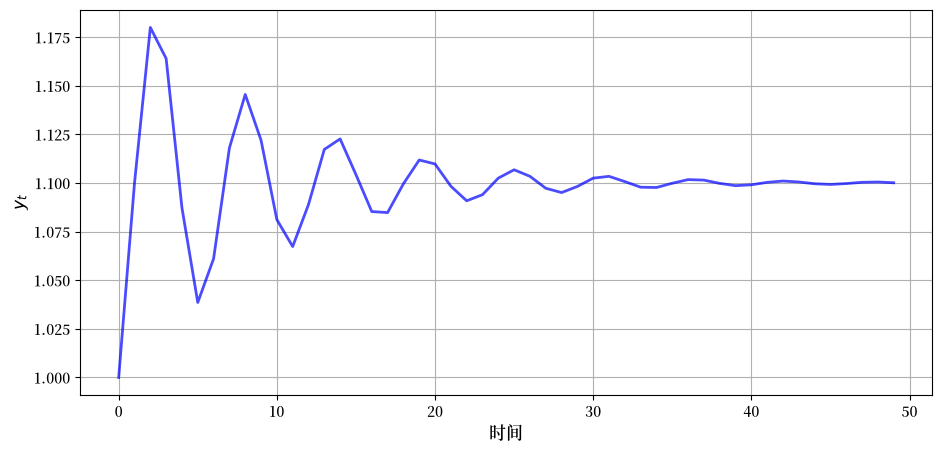
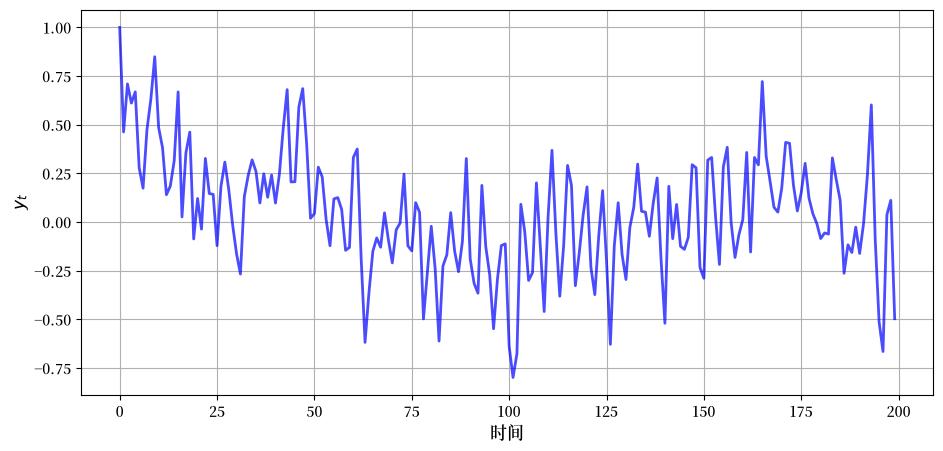
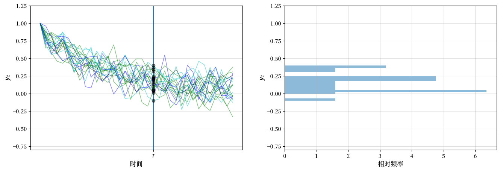
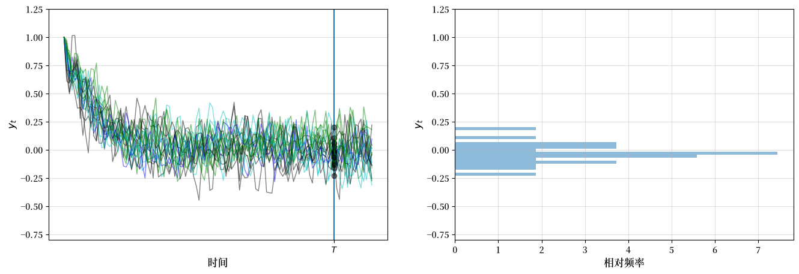
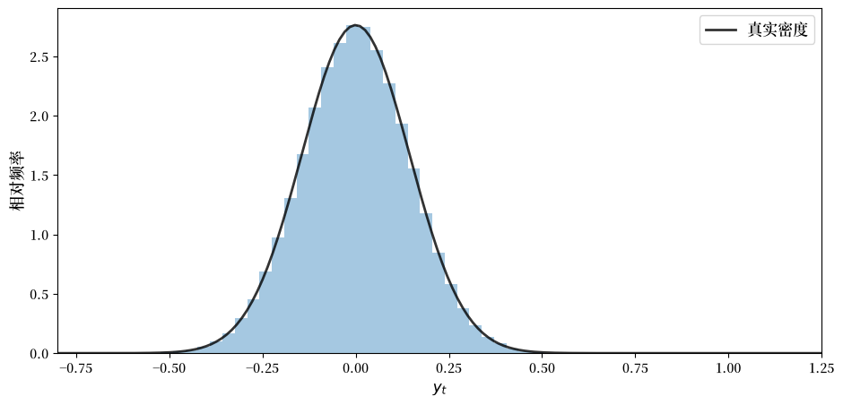
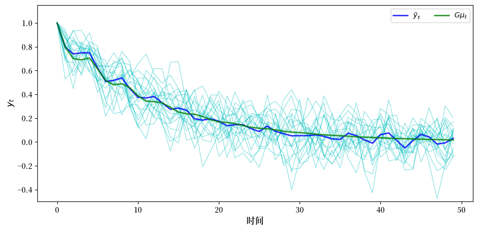
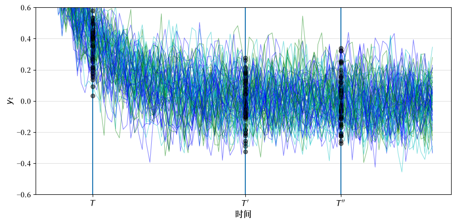
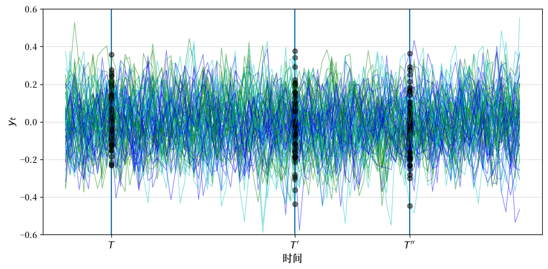

40. 线性状态空间模型#
“我们可以将宇宙的现状视为其过去的结果和未来的原因” – 拉普拉斯侯爵
除了Anaconda中已有的库外，本讲座还需要以下库：
!pip install quantecon
40.1. 概述#
本讲座介绍线性状态空间动态系统。
线性状态空间系统是我们之前学习过的标量AR(1)过程的推广。
这个模型是一个具有强大预测理论的重要工具。
它的许多应用包括：
表示高阶线性系统的动态特性
预测系统在未来\(j\)步后的位置
预测变量未来值的几何和，例如
非金融收入
股票股息
货币供应量
政府赤字或盈余等
实用模型的关键要素
弗里德曼的永久收入消费平滑模型
巴罗的总税收平滑模型
卡根超通货膨胀模型的理性预期版本
萨金特和华莱士的”令人不快的货币主义算术”等
让我们从一些导入开始：
import matplotlib.pyplot as plt
import matplotlib as mpl
FONTPATH = "fonts/SourceHanSerifSC-SemiBold.otf"
mpl.font_manager.fontManager.addfont(FONTPATH)
plt.rcParams['font.family'] = ['Source Han Serif SC']
plt.rcParams["figure.figsize"] = (11, 5) #set default figure size
import numpy as np
from quantecon import LinearStateSpace
from scipy.stats import norm
import random
40.2. 线性状态空间模型#
涉及的对象包括：
一个 \(n \times 1\) 向量 \(x_t\) 表示时间 \(t = 0, 1, 2, \ldots\) 的状态。
一个 \(m \times 1\) 独立同分布随机向量序列 \(w_t \sim N(0,I)\)。
一个 \(k \times 1\) 向量 \(y_t\) 表示时间 \(t = 0, 1, 2, \ldots\) 的观测值。
一个 \(n \times n\) 矩阵 \(A\) 称为转移矩阵。
一个 \(n \times m\) 矩阵 \(C\) 称为波动矩阵。
一个 \(k \times n\) 矩阵 \(G\) 有时称为输出矩阵。
以下是线性状态空间系统
40.2.1. 基本参数#
模型的基本参数是
矩阵 \(A, C, G\)
冲击分布，我们将其特定为 \(N(0,I)\)
初始条件\(x_0\)的分布，我们已设定为\(N(\mu_0, \Sigma_0)\)
给定\(A, C, G\)以及\(x_0\)和\(w_1, w_2, \ldots\)的抽样值，模型(40.1)确定了序列\(\{x_t\}\)和\(\{y_t\}\)的值。
即使没有这些抽样值，基本要素1–3也确定了\(\{x_t\}\)和\(\{y_t\}\)的概率分布。
稍后我们将看到如何计算这些分布及其矩。
40.2.1.1. 鞅差分冲击#
我们做出了一个常见的假设，即冲击是独立的标准化正态向量。
但我们所说的一些内容在假设\(\{w_{t+1}\}\)是鞅差序列的条件下也是有效的。
鞅差序列是指在给定过去信息条件下均值为零的序列。
在当前情况下，由于\(\{x_t\}\)是我们的状态序列，这意味着它满足
这是一个比 \(\{w_t\}\) 是独立同分布且 \(w_{t+1} \sim N(0,I)\) 还更弱的条件。
40.2.2. 示例#
通过适当选择基本参数，各种动态系统都可以用线性状态空间模型来表示。
让我们来看几个例子来说明这一点。
这些示例也阐明了”找到状态是一门艺术”这一智慧格言。
40.2.2.1. 二阶差分方程#
设 \(\{y_t\}\) 是满足以下条件的确定性序列
为了将 (40.2) 映射到我们的状态空间系统 (40.1)，我们设
通过代入这些定义，我们可以验证状态空间表示(40.1)确实等价于原始的差分方程(40.2)。
下图显示了当\(\phi_0 = 1.1, \phi_1=0.8, \phi_2 = -0.8, y_0 = y_{-1} = 1\)时，这个过程的动态变化。
def plot_lss(A,
C,
G,
n=3,
ts_length=50):
ar = LinearStateSpace(A, C, G, mu_0=np.ones(n))
x, y = ar.simulate(ts_length)
fig, ax = plt.subplots()
y = y.flatten()
ax.plot(y, 'b-', lw=2, alpha=0.7)
ax.grid()
ax.set_xlabel('时间', fontsize=12)
ax.set_ylabel('$y_t$', fontsize=12)
plt.show()
ϕ_0, ϕ_1, ϕ_2 = 1.1, 0.8, -0.8
A = [[1, 0, 0 ],
[ϕ_0, ϕ_1, ϕ_2],
[0, 1, 0 ]]
C = np.zeros((3, 1))
G = [0, 1, 0]
plot_lss(A, C, G)
findfont: Failed to find font weight normal, now using 600.
findfont: Failed to find font weight normal, now using 600.
findfont: Failed to find font weight normal, now using 600.

稍后我们将尝试重现这个图示。
40.2.2.2. 单变量自回归过程#
我们可以使用(40.1)来表示这个模型
其中\(\{w_t\}\)是独立同分布的标准正态分布。
为了将其转换为线性状态空间格式，我们取\(x_t = \begin{bmatrix} y_t & y_{t-1} & y_{t-2} & y_{t-3} \end{bmatrix}'\)和
矩阵\(A\)具有向量\(\begin{bmatrix}\phi_1 & \phi_2 & \phi_3 & \phi_4 \end{bmatrix}\)伴随矩阵的形式。
下图显示了当
该过程的动态变化
ϕ_1, ϕ_2, ϕ_3, ϕ_4 = 0.5, -0.2, 0, 0.5
σ = 0.2
A_1 = [[ϕ_1, ϕ_2, ϕ_3, ϕ_4],
[1, 0, 0, 0 ],
[0, 1, 0, 0 ],
[0, 0, 1, 0 ]]
C_1 = [[σ],
[0],
[0],
[0]]
G_1 = [1, 0, 0, 0]
plot_lss(A_1, C_1, G_1, n=4, ts_length=200)

40.2.2.3. 向量自回归#
现假设
\(y_t\) 是一个 \(k \times 1\) 向量
\(\phi_j\) 是一个 \(k \times k\) 矩阵且
\(w_t\) 是 \(k \times 1\)
那么(40.3)被称为向量自回归。
要将其映射到(40.1)中，我们设
其中 \(I\) 是 \(k \times k\) 单位矩阵，\(\sigma\) 是一个 \(k \times k\) 矩阵。
40.2.2.4. 季节性#
我们可以使用(40.1)来表示
确定性季节性 \(y_t = y_{t-4}\)
非确定性季节性 \(y_t = \phi_4 y_{t-4} + w_t\)
事实上，这两种情况都是(40.3)的特例。
对于确定性季节性，转移矩阵变为
容易验证\(A^4 = I\)，这意味着\(x_t\)是一个周期严格为 4 的序列：[1]
这样的\(x_t\)过程可用于对季度时间序列中的确定性季节性进行建模。
非确定性季节性产生循环但非周期性的季节波动。
40.2.2.5. 时间趋势#
模型\(y_t = a t + b\)被称为线性时间趋势。
我们可以通过以下方式将该模型表示为线性状态空间形式
并从初始条件 \(x_0 = \begin{bmatrix} 0 & 1\end{bmatrix}'\) 开始。
实际上，可以使用状态空间系统来表示任何阶数的多项式趋势。
例如，我们可以通过以下方式将模型 \(y_t = a t^2 + bt + c\) 表示为线性状态空间形式：
并从初始条件 \(x_0 = \begin{bmatrix} 0 & 0 & 1 \end{bmatrix}'\) 开始。
由此可得：
则 \(x_t^\prime = \begin{bmatrix} t(t-1)/2 &t & 1 \end{bmatrix}\)。现在你可以验证 \(y_t = G x_t\) 具有正确的形式。
40.2.3. 移动平均表示#
通过重复使用(40.1)，可以找到一个表示\(x_t\)作为\(x_0, w_1, w_2, \ldots, w_t\)函数的非递归表达式：
表达式(40.5)是一个移动平均表示。
它将\(\{x_t\}\)表示为以下内容的线性函数：
过程\(\{w_t\}\)的当前值和过去值
初始条件\(x_0\)
作为移动平均表示的一个例子，设模型为
你将能够证明 \(A^t = \begin{bmatrix} 1 & t \cr 0 & 1 \end{bmatrix}\) 和 \(A^j C = \begin{bmatrix} 1 & 0 \end{bmatrix}'\)。
将其代入移动平均表示式 (40.5)，我们得到
其中 \(x_{1t}\) 是 \(x_t\) 的第一个元素。
右边的第一项是鞅差的累积和，因此是一个鞅。
第二项是时间的平移线性函数。
因此，\(x_{1t}\) 被称为带漂移的鞅。
40.3. 分布和矩#
40.3.1. 无条件矩#
使用 (40.1)，我们可以很容易地得到 \(x_t\) 和 \(y_t\) 的（无条件）均值表达式。
我们将很快解释什么是无条件和条件均值。
令 \(\mu_t := \mathbb{E} [x_t]\) 并使用期望的线性性质，我们得到
这里的 \(\mu_0\) 是在 (40.1) 中给出的初始值。
\(x_t\) 的方差-协方差矩阵是 \(\Sigma_t := \mathbb{E} [ (x_t - \mu_t) (x_t - \mu_t)']\)。
使用 \(x_{t+1} - \mu_{t+1} = A (x_t - \mu_t) + C w_{t+1}\)，我们可以通过以下递归方式确定这个矩阵
与 \(\mu_0\) 一样，矩阵 \(\Sigma_0\) 是在 (40.1) 中给出的初始值。
在术语方面，我们有时会称
\(\mu_t\) 为 \(x_t\) 的无条件均值
\(\Sigma_t\) 为 \(x_t\) 的无条件方差-协方差矩阵
这是为了将 \(\mu_t\) 和 \(\Sigma_t\) 与使用条件信息的相关对象区分开来，这些对象将在下面定义。
但是，你应该注意到这些”无条件”矩确实依赖于初始分布 \(N(\mu_0, \Sigma_0)\)。
40.3.1.1. 可观测变量的矩#
再次利用期望的线性性，我们有
\(y_t\) 的方差-协方差矩阵可以很容易地证明为
40.3.2. 分布#
一般来说，知道一个随机向量的均值和方差-协方差矩阵，并不完全等同于知道其完整分布。
然而，在某些情况下，仅仅这些矩就能告诉我们所需要知道的一切。
这种情况发生在均值向量和协方差矩阵是决定总体分布的全部参数的时候。
其中一种情况是当所讨论的向量服从高斯分布（即正态分布）时。
在这种情况下，考虑到
我们对基本量的高斯分布假设
正态性在线性运算下得以保持
事实上，众所周知
特别是，基于我们对基本量的高斯分布假设和(40.1)的线性特性，我们可以立即看出\(x_t\)和\(y_t\)对所有\(t \geq 0\)都是高斯分布的[2]。
由于\(x_t\)是高斯分布的，要找到其分布，我们只需要确定其均值和方差-协方差矩阵。
但实际上我们已经在(40.6)和(40.7)中完成了这项工作。
令\(\mu_t\)和\(\Sigma_t\)如这些方程所定义，我们有
40.3.3. 系综解释#
直观上，分布中的概率对应于从该分布中抽取的大量样本中的相对频率。
让我们将这个想法应用到我们的设定中，重点关注固定 \(T\) 时 \(y_T\) 的分布。
我们可以通过重复模拟系统直到时间 \(T\) 的演化来生成 \(y_T\) 的独立抽样，每次使用一组独立的冲击。
下图显示了20次模拟，产生了20个 \(\{y_t\}\) 的时间序列，因此得到了20个 \(y_T\) 的抽样。
所考虑的系统是单变量自回归模型(40.3)。
左图中的黑点表示 \(y_T\) 的值
def cross_section_plot(A,
C,
G,
T=20, # 设置时间
ymin=-0.8,
ymax=1.25,
sample_size = 20, # 20个观测值/模拟
n=4): # 初始x0的维度数
ar = LinearStateSpace(A, C, G, mu_0=np.ones(n))
fig, axes = plt.subplots(1, 2, figsize=(16, 5))
for ax in axes:
ax.grid(alpha=0.4)
ax.set_ylim(ymin, ymax)
ax = axes[0]
ax.set_ylim(ymin, ymax)
ax.set_ylabel('$y_t$', fontsize=12)
ax.set_xlabel('时间', fontsize=12)
ax.vlines((T,), -1.5, 1.5)
ax.set_xticks((T,))
ax.set_xticklabels(('$T$',))
sample = []
for i in range(sample_size):
rcolor = random.choice(('c', 'g', 'b', 'k'))
x, y = ar.simulate(ts_length=T+15)
y = y.flatten()
ax.plot(y, color=rcolor, lw=1, alpha=0.5)
ax.plot((T,), (y[T],), 'ko', alpha=0.5)
sample.append(y[T])
y = y.flatten()
axes[1].set_ylim(ymin, ymax)
axes[1].set_ylabel('$y_t$', fontsize=12)
axes[1].set_xlabel('相对频率', fontsize=12)
axes[1].hist(sample, bins=16, density=True, orientation='horizontal', alpha=0.5)
plt.show()
ϕ_1, ϕ_2, ϕ_3, ϕ_4 = 0.5, -0.2, 0, 0.5
σ = 0.1
A_2 = [[ϕ_1, ϕ_2, ϕ_3, ϕ_4],
[1, 0, 0, 0],
[0, 1, 0, 0],
[0, 0, 1, 0]]
C_2 = [[σ], [0], [0], [0]]
G_2 = [1, 0, 0, 0]
cross_section_plot(A_2, C_2, G_2)
findfont: Failed to find font weight normal, now using 600.

右侧图展示了从20个\(y_T\)样本中得到的相对频率分布，以横向直方图的形式呈现。
这是另一个图，这次有100个观测值
t = 100
cross_section_plot(A_2, C_2, G_2, T=t)

让我们现在尝试用500,000个观测值，只显示直方图（不旋转）
T = 100
ymin=-0.8
ymax=1.25
sample_size = 500_000
ar = LinearStateSpace(A_2, C_2, G_2, mu_0=np.ones(4))
fig, ax = plt.subplots()
x, y = ar.simulate(sample_size)
mu_x, mu_y, Sigma_x, Sigma_y, Sigma_yx = ar.stationary_distributions()
f_y = norm(loc=float(mu_y.item()), scale=float(np.sqrt(Sigma_y.item())))
y = y.flatten()
ygrid = np.linspace(ymin, ymax, 150)
ax.hist(y, bins=50, density=True, alpha=0.4)
ax.plot(ygrid, f_y.pdf(ygrid), 'k-', lw=2, alpha=0.8, label='真实密度')
ax.set_xlim(ymin, ymax)
ax.set_xlabel('$y_t$', fontsize=12)
ax.set_ylabel('相对频率', fontsize=12)
ax.legend(fontsize=12)
plt.show()

黑线是根据(40.12)计算的\(y_T\)的总体密度。
直方图和总体分布很接近，这是符合预期的。
通过观察图形并尝试不同的参数，你可以理解总体分布是如何依赖于上面列出的模型基本要素的，这种依赖关系是通过分布的参数体现的。
40.3.3.1. 系综均值#
在前面的图中，我们通过以下方式近似了\(y_T\)的总体分布：
生成\(I\)条样本路径（即时间序列），其中\(I\)是一个很大的数
记录每个观测值\(y^i_T\)
对这个样本制作直方图
正如直方图近似总体分布一样，系综或横截面平均值
近似期望值\(\mathbb{E} [y_T] = G \mu_T\)（由大数定律所示）。
这里是一个模拟，比较了在时间点\(t=0,\ldots,50\)处的系综平均值和总体均值。
参数与前面的图表相同，样本量相对较小（\(I=20\)）。
I = 20
T = 50
ymin = -0.5
ymax = 1.15
ar = LinearStateSpace(A_2, C_2, G_2, mu_0=np.ones(4))
fig, ax = plt.subplots()
ensemble_mean = np.zeros(T)
for i in range(I):
x, y = ar.simulate(ts_length=T)
y = y.flatten()
ax.plot(y, 'c-', lw=0.8, alpha=0.5)
ensemble_mean = ensemble_mean + y
ensemble_mean = ensemble_mean / I
ax.plot(ensemble_mean, color='b', lw=2, alpha=0.8, label='$\\bar y_t$')
m = ar.moment_sequence()
population_means = []
for t in range(T):
μ_x, μ_y, Σ_x, Σ_y = next(m)
population_means.append(float(μ_y.item()))
ax.plot(population_means, color='g', lw=2, alpha=0.8, label=r'$G\mu_t$')
ax.set_ylim(ymin, ymax)
ax.set_xlabel('时间', fontsize=12)
ax.set_ylabel('$y_t$', fontsize=12)
ax.legend(ncol=2)
plt.show()

\(x_t\) 的系综均值为
极限 \(\mu_T\) 是一个”长期平均值”。
(这里的长期平均值指的是无限多个(\(I = \infty\))样本 \(x_T\) 的平均值)
大数定律的另一个应用向我们保证
40.3.4. 联合分布#
在前面的讨论中，我们单独研究了 \(x_t\) 和 \(y_t\) 的分布。
这给了我们有用的信息，但不足以回答以下问题：
\(x_t\) 在所有 \(t\) 时刻都大于等于0的概率是多少？
过程 \(\{y_t\}\) 在降到 \(b\) 以下之前超过某个值 \(a\) 的概率是多少？
等等
这些问题涉及这些序列的联合分布。
要计算 \(x_0, x_1, \ldots, x_T\) 的联合分布，回想
联合密度与条件密度存在如下关系
由此规则可得 \(p(x_0, x_1) = p(x_1 \,|\, x_0) p(x_0)\)。
马尔可夫性质 \(p(x_t \,|\, x_{t-1}, \ldots, x_0) = p(x_t \,|\, x_{t-1})\) 和反复应用前述规则使我们得到
边缘密度 \(p(x_0)\) 就是原始的 \(N(\mu_0, \Sigma_0)\)。
根据(40.1)，条件密度为
40.3.4.1. 自协方差函数#
与联合分布相关的一个重要对象是自协方差函数
通过基本计算可知
注意 \(\Sigma_{t+j,t}\) 通常取决于两个日期之间的间隔 \(j\) 和较早的日期 \(t\)。
40.4. 平稳性和遍历性#
平稳性和遍历性是两个重要性质，当它们成立时，能极大地帮助线性状态空间模型的分析。
让我们从直观理解开始。
40.4.1. 可视化稳定性#
让我们看看来自我们上面分析的相同模型的更多时间序列。
这张图显示了 \(y\) 在时间点 \(T, T', T''\) 的横截面分布
def cross_plot(A,
C,
G,
steady_state='False',
T0 = 10,
T1 = 50,
T2 = 75,
T4 = 100):
ar = LinearStateSpace(A, C, G, mu_0=np.ones(4))
if steady_state == 'True':
μ_x, μ_y, Σ_x, Σ_y, Σ_yx = ar.stationary_distributions()
ar_state = LinearStateSpace(A, C, G, mu_0=μ_x, Sigma_0=Σ_x)
ymin, ymax = -0.6, 0.6
fig, ax = plt.subplots()
ax.grid(alpha=0.4)
ax.set_ylim(ymin, ymax)
ax.set_ylabel('$y_t$', fontsize=12)
ax.set_xlabel('时间', fontsize=12)
ax.vlines((T0, T1, T2), -1.5, 1.5)
ax.set_xticks((T0, T1, T2))
ax.set_xticklabels(("$T$", "$T'$", "$T''$"), fontsize=12)
for i in range(80):
rcolor = random.choice(('c', 'g', 'b'))
if steady_state == 'True':
x, y = ar_state.simulate(ts_length=T4)
else:
x, y = ar.simulate(ts_length=T4)
y = y.flatten()
ax.plot(y, color=rcolor, lw=0.8, alpha=0.5)
ax.plot((T0, T1, T2), (y[T0], y[T1], y[T2],), 'ko', alpha=0.5)
plt.show()
cross_plot(A_2, C_2, G_2)

注意时间序列如何”稳定下来”，即在 \(T'\) 和 \(T''\) 时的分布相对相似 — 但与 \(T\) 时的分布不同。
显然，当 \(t \to \infty\) 时，\(y_t\) 的分布收敛到一个固定的长期分布。
当这样的分布存在时，它被称为平稳分布。
40.4.2. 平稳分布#
在我们的设定中，如果分布 \(\psi_{\infty}\) 对于 \(x_t\) 满足以下条件，则称其为平稳的：
由于
在当前情况下，所有分布都是高斯分布
高斯分布由其均值和方差-协方差矩阵确定
我们可以将定义重述如下：如果 \(\psi_{\infty}\) 满足以下条件，则它对于 \(x_t\) 是平稳的
其中 \(\mu_{\infty}\) 和 \(\Sigma_{\infty}\) 分别是 (40.6) 和 (40.7) 的不动点。
40.4.3. 协方差平稳过程#
让我们看看当我们从平稳分布开始 \(x_0\) 时，前面的图形会发生什么变化。
cross_plot(A_2, C_2, G_2, steady_state='True')

现在在 \(T, T'\) 和 \(T''\) 观察到的分布差异完全来自于有限样本量导致的随机波动。
通过
我们选择 \(x_0 \sim N(\mu_{\infty}, \Sigma_{\infty})\)
将 \(\mu_{\infty}\) 和 \(\Sigma_{\infty}\) 定义为 (40.6) 和 (40.7) 的不动点
我们确保了
此外，根据 (40.14)，自协方差函数形式为 \(\Sigma_{t+j,t} = A^j \Sigma_\infty\)，它依赖于 \(j\) 而不依赖于 \(t\)。
这启发我们给出以下定义。
如果一个过程 \(\{x_t\}\) 满足以下条件，则称其为协方差平稳的：
\(\mu_t\) 和 \(\Sigma_t\) 都不随 \(t\) 变化
\(\Sigma_{t+j,t}\) 依赖于时间间隔 \(j\) 而不依赖于时间 \(t\)
在我们的设定中，如果\(\mu_0, \Sigma_0, A, C\)的取值使得\(\mu_t, \Sigma_t, \Sigma_{t+j,t}\)都不依赖于\(t\)，那么\(\{x_t\}\)将是协方差平稳的。
40.4.4. 平稳性条件#
40.4.4.1. 全局稳定情况#
如果\(A\)的所有特征值的模都严格小于1，那么差分方程\(\mu_{t+1} = A \mu_t\)就有唯一的不动点\(\mu_{\infty} = 0\)。
也就是说，如果(np.absolute(np.linalg.eigvals(A)) < 1).all() == True。
在这种情况下，差分方程(40.7)也有唯一的不动点，而且
无论初始条件\(\mu_0\)和\(\Sigma_0\)如何。
这就是全局稳定情况——更多理论内容请参见这些笔记。
然而，全局稳定性对于平稳解来说过于严格，而且通常也超出我们的需求。
为了说明这一点，让我们考虑二阶差分方程的例子。
在这里，状态是 \(x_t = \begin{bmatrix} 1 & y_t & y_{t-1} \end{bmatrix}'\)。
由于状态向量中的第一个分量是常数，我们永远不会有 \(\mu_t \to 0\)。
我们如何求解具有常数状态分量的平稳解？
40.4.4.2. 具有常数状态分量的过程#
为了研究这样的过程，假设 \(A\) 和 \(C\) 具有如下形式
其中
\(A_1\) 是一个 \((n-1) \times (n-1)\) 矩阵
\(a\) 是一个 \((n-1) \times 1\) 列向量
令 \(x_t = \begin{bmatrix} x_{1t}' & 1 \end{bmatrix}'\)，其中 \(x_{1t}\) 是 \((n-1) \times 1\)。
因此可得
令 \(\mu_{1t} = \mathbb{E} [x_{1t}]\) 并对该表达式两边取期望得到
现假设 \(A_1\) 的所有特征值的模都严格小于1。
那么 (40.15) 有唯一的平稳解，即：
\(\mu_t\) 本身的平稳值则为 \(\mu_\infty := \begin{bmatrix} \mu_{1\infty}' & 1 \end{bmatrix}'\)。
\(\Sigma_t\) 和 \(\Sigma_{t+j,t}\) 的平稳值满足
注意这里 \(\Sigma_{t+j,t}\) 依赖于时间间隔 \(j\) 但不依赖于日历时间 \(t\)。
总之，如果
\(x_0 \sim N(\mu_{\infty}, \Sigma_{\infty})\) 且
\(A_1\) 的所有特征值的模都严格小于1
那么 \(\{x_t\}\) 过程是协方差平稳的，具有常数状态分量。
40.4.5. 遍历性#
假设我们正在处理一个协方差平稳过程。
在这种情况下，我们知道当样本量 \(I\) 趋向无穷时，系综均值将收敛到 \(\mu_{\infty}\)。
40.4.5.1. 时间平均#
虽然模拟的系综平均在理论上很有意义，但在现实中，我们通常只能观测到单个实现 \(\{x_t, y_t\}_{t=0}^T\)。
因此现在让我们取一个单独的实现并形成时间序列平均值
这些时间序列平均值是否会收敛到我们基本状态空间表示中可解释的内容？
答案取决于所谓的遍历性。
遍历性是时间序列平均值和整体平均值相一致的性质。
更正式地说，遍历性意味着时间序列样本平均值会收敛到其在平稳分布下的期望值。
具体来说：
\(\frac{1}{T} \sum_{t=1}^T x_t \to \mu_{\infty}\)
\(\frac{1}{T} \sum_{t=1}^T (x_t -\bar x_T) (x_t - \bar x_T)' \to \Sigma_\infty\)
\(\frac{1}{T} \sum_{t=1}^T (x_{t+j} -\bar x_T) (x_t - \bar x_T)' \to A^j \Sigma_\infty\)
在我们的线性高斯设定中，任何协方差平稳过程都是遍历的。
40.5. 含噪声的观测#
在某些情况下，观测方程 \(y_t = Gx_t\) 会被修改以包含一个误差项。
通常这个误差项反映了真实状态只能被不完全观测的特性。
为了在观测中引入误差项，我们引入
一个由\(\ell \times 1\)随机向量组成的IID序列 \(v_t \sim N(0,I)\)。
一个\(k \times \ell\)矩阵\(H\)。
并将线性状态空间系统扩展为
序列\(\{v_t\}\)被假定与\(\{w_t\}\)相互独立。
过程\(\{x_t\}\)不受观测方程噪声的影响，其矩、分布及稳定性性质均保持不变。
\(y_t\)的无条件矩从(40.8)和(40.9)现在变为
\(y_t\)的方差-协方差矩阵可以很容易地证明为
\(y_t\) 的分布因此为
40.6. 预测#
线性状态空间系统的预测理论优雅而简单。
40.6.1. 预测公式 – 条件均值#
预测变量的自然方法是使用条件分布。
例如，基于时间 t 已知信息对 \(x_{t+1}\) 的最优预测是
右边的等式来自 \(x_{t+1} = A x_t + C w_{t+1}\) 以及 \(w_{t+1}\) 均值为零且独立于 \(x_t, x_{t-1}, \ldots, x_0\) 的事实。
\(\mathbb{E}_t [x_{t+1}] = \mathbb{E}[x_{t+1} \mid x_t]\) 是 \(\{x_t\}\) 具有马尔可夫性质的一个推论。
一步预测误差为
预测误差的协方差矩阵为
更一般地，我们想要计算\(j\)步超前预测\(\mathbb{E}_t [x_{t+j}]\)和\(\mathbb{E}_t [y_{t+j}]\)。
通过一些代数运算，我们得到
根据IID性质，当前及过去的状态值无法提供关于冲击未来值的任何信息。
因此\(\mathbb{E}_t[w_{t+k}] = \mathbb{E}[w_{t+k}] = 0\)。
由期望的线性性可知，\(x\)的\(j\)步超前预测为
因此\(y\)的\(j\)步超前预测为
40.6.2. 预测误差的协方差#
获得\(j\)步超前预测误差向量的协方差矩阵是很有用的
显然，
(40.21)中定义的\(V_j\)可以通过\(V_1 = CC'\)和以下递归方式计算：
\(V_j\)是预测\(x_{t+j}\)的误差的条件协方差矩阵，条件是基于时间\(t\)的信息\(x_t\)。
在特定条件下，\(V_j\)收敛到：
方程(40.23)是协方差矩阵\(V_\infty\)的离散李雅普诺夫方程的一个例子。
\(V_j\)收敛的一个充分条件是\(A\)的特征值的模都严格小于1。
收敛的较弱充分条件将模等于或大于1的特征值与\(C\)中等于\(0\)的元素相关联。
40.7. 代码#
我们之前的模拟和计算都是基于QuantEcon.py包中的lss.py文件。
该代码实现了一个用于处理线性状态空间模型的类(包括模拟、计算矩等功能)。
你可能不太熟悉的一个Python结构是在moment_sequence()方法中使用生成器函数。
若你忘记了生成器函数是如何工作的，请回去阅读相关文档。
具体示例详见习题解答部分。
40.8. 练习#
练习 40.1
在多个场景中，我们需要计算由线性状态空间系统(40.1)所控制的未来随机变量的几何和的预测值。
我们需要以下对象：
未来\(x\)的几何和的预测值，即\(\mathbb{E}_t \left[ \sum_{j=0}^\infty \beta^j x_{t+j} \right]\)。
未来\(y\)的几何和的预测值，即\(\mathbb{E}_t \left[\sum_{j=0}^\infty \beta^j y_{t+j} \right]\)。
这些对象是一些著名且有趣的动态模型的重要组成部分。
例如：
如果\(\{y_t\}\)是股息流，那么\(\mathbb{E} \left[\sum_{j=0}^\infty \beta^j y_{t+j} | x_t \right]\)是一个股票价格模型
如果\(\{y_t\}\)是货币供应量，那么\(\mathbb{E} \left[\sum_{j=0}^\infty \beta^j y_{t+j} | x_t \right]\)是一个价格水平模型
证明：
和
\(A\) 的每个特征值的模必须小于多少？
解答 练习 40.1
假设 \(A\) 的每个特征值的模都严格小于 \(\frac{1}{\beta}\)。
根据这个结论，我们有 \(I + \beta A + \beta^2 A^2 + \cdots = \left[I - \beta A \right]^{-1}\)。
这导致我们的公式：
未来 \(x\) 几何和的预测
未来 \(y\) 几何和的预测